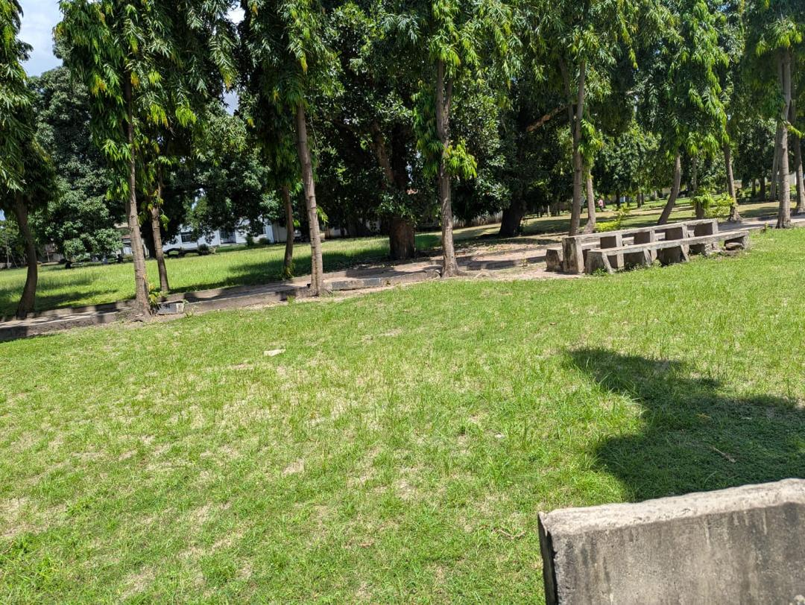
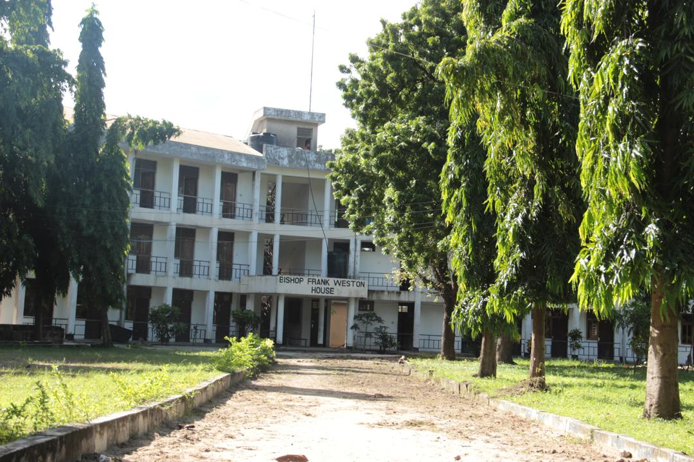

THE ANGLICAN CHURCH OF TANZANIA
St. Marks Theological College
St. Marks Theological College
St. Marks Theological College is committed to providing a serene and spiritually enriching environment for our students. Our campus is surrounded by lush greenery, creating a peaceful atmosphere that fosters reflection and growth. We believe that a harmonious environment enhances the learning experience and supports the spiritual journey of our students.

Peaceful outdoor study areas.

Relaxing environment for students.

Peaceful outdoor study areas.

Comfortable living spaces for students.

Peaceful indoor study areas.

Peaceful outdoor study areas.

Peaceful study areas.
St. Marks Theological College provides a peaceful and spiritually enriching environment designed to support academic excellence and personal growth.
Our campus promotes focused learning through quiet study areas, modern classrooms, and access to theological resources that support deep understanding.
Daily prayers, chapel services, and fellowship sessions create a strong spiritual foundation for all students within the college.
The college ensures a safe and supportive environment where students live, learn, and grow together as a community.